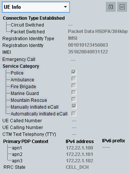

To display the "UE Info" area, select "UE Info" in the field below the event log.
The UE info area shows UE-related information after registration or when a connection to the UE has been established.
This section is not relevant for reduced signaling.
To enlarge the "UE Info" area vertically, press the maximize button  to the right.
to the right.

To maximize the area also horizontally, press the maximize button to the right.
The following UE-related information is displayed:
Established connection types, for example, UE terminated voice call.
Remote command:UE registration identity information received from the UE. This information is also displayed in the configuration dialog (see "UE Identity").
Remote command:International mobile equipment identity (IMEI) received from the UE. It is administrable whether this information is requested from the UE or not, see "Requested UE Data".
Remote command:Information related to the active eCall.
Remote command:For UE originated calls: dialed number (called number) and number of the UE (calling number)
Remote command:Information whether the UE supports cellular text telephony (CTM). In general, this information is available during a voice or video call.
Remote command:Returns all access point names (APN) used by the UE during a packet data connection. The R&S CMW supports also multiple PDP context, see also "End-to-End Packet Data Connections".
To each assigned APN, it also displays the IPv4 address and/or the IPv6 prefix that have been assigned to the UE by the R&S CMW.
The UE indicates whether it supports IPv4 only or IPv6 only or both. Depending on this information, the R&S CMW assigns either an IPv4 address or an IPv6 prefix or both and displays the assigned values.
Remote command:Returns the RRC state of the UE. RRC state transitions are monitored in the "Event Log".
Remote command: